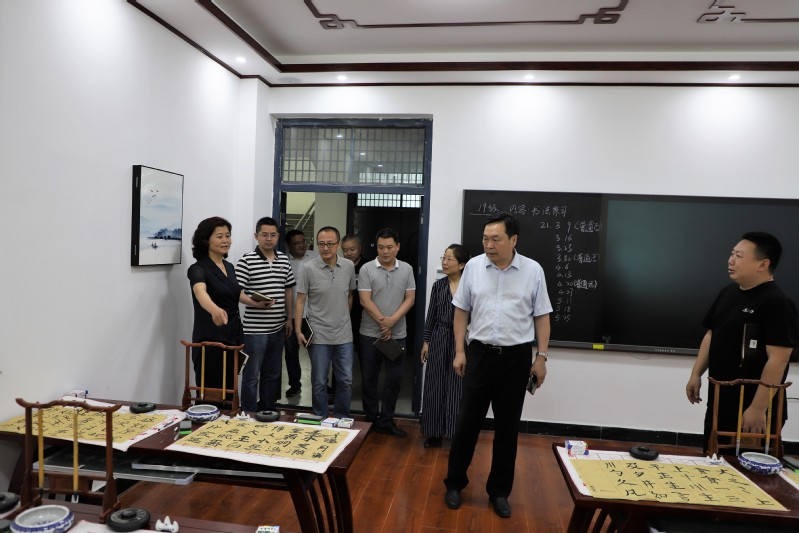
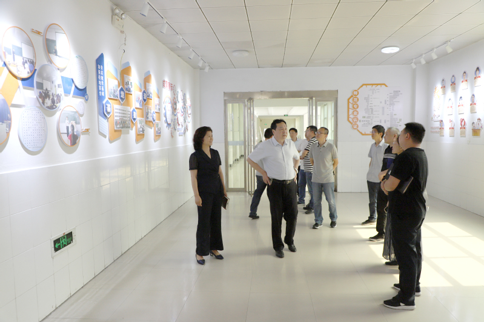

6月2日下午，副校长陆相欣、陈喜玲带领教务处、教学质量管理办公室等部门负责人，实地督查物理与电信工程学院、体育学院师范类专业认证的各项准备工作。
陆相欣、陈喜玲一行查看了两个学院的认证准备情况。在每个考查点，校领导认真听取汇报，对认证材料准备、“三字一话”训练室、教室、教学设施优化等迎评工作各环节提出具体的改进意见。
陆相欣、陈喜玲鼓励大家坚定信心、扎实做好各项工作，强调专业认证是推动专业内涵建设、提高人才培养质量的重要手段，两个学院要以专业认证为契机，以评促建、以评促改、以评促强，严格按照认证标准规范各个教学环节，真正把人才培养质量提升上去。